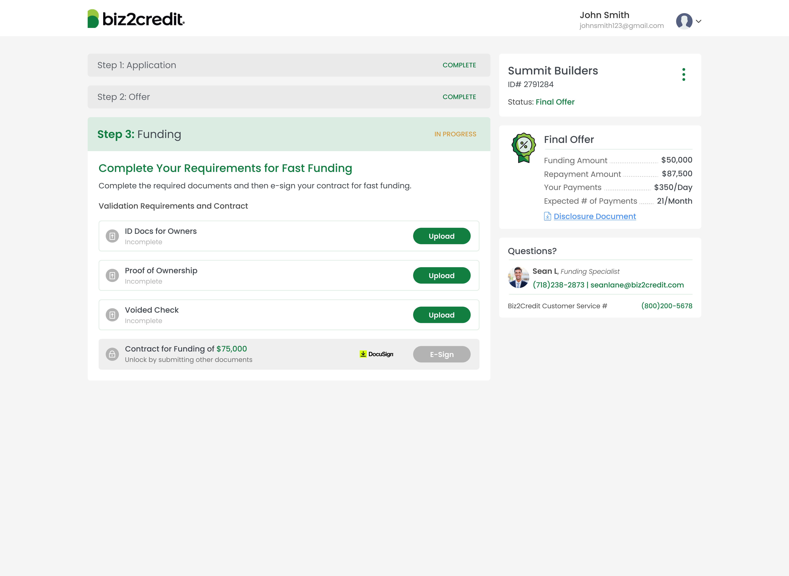
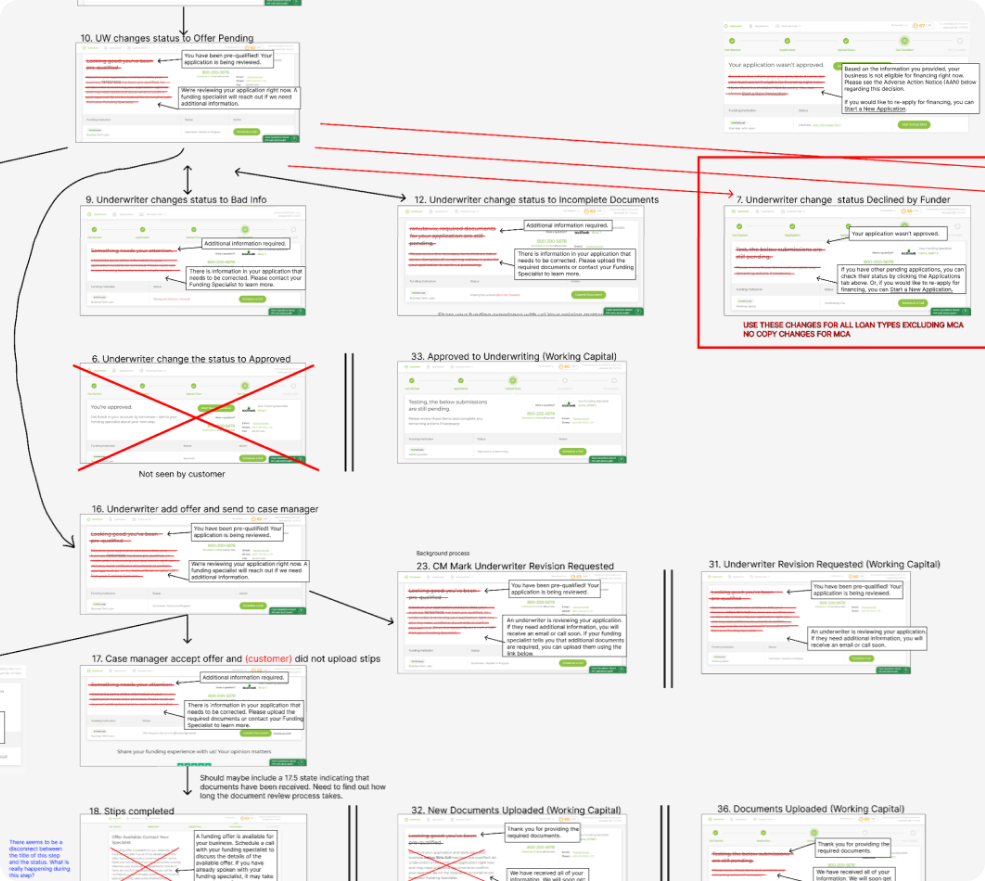

Transforming & Automating a Fintech Customer Dashboard
ABOUT
Dashboards play a critical role in providing users with essential data and insights, enabling smooth interactions with application processes. However, Biz2Credit, a leading digital lender for small businesses, faced a significant challenge—its customer dashboard was neither functional nor intuitive. As a result, users struggled with status updates, task navigation, and document submission. So, I redesigned it.
MY ROLE
Lead Product Designer, UX Research, Architecture Planning, Wireframing
TOOLS
Figma
Figjam

PROBLEM STATEMENT
Biz2Credit specializes in providing financing to small businesses, but the customer dashboard was a source of friction in the funding process. Specifically, the dashboard lacked clarity around application status, overwhelmed users with redundant calls-to-action (CTAs), and required manual intervention from customer support for document submission. The cluttered interface and lack of automation slowed down the funding process, creating a need for a comprehensive redesign to improve both navigation and speed.
RESEARCH
To better understand the user experience, we took a hands-on approach by completing funding applications ourselves. We then collected data on existing dashboard screens and identified the pain points specific to each funding product. We supplemented this research with customer interviews and user behavior analysis using Microsoft Clarity, heatmaps, and user session recordings. This data helped us pinpoint areas where users struggled and allowed us to focus on addressing key issues in the redesign.
UX CHALLENGES
- Application Status: The dashboard did not clearly convey whether the customer had tasks to complete or what steps they should take next.
- Overloaded CTAs: The excessive and redundant CTAs confused users and hindered their progress through the application.
- Hidden Tasks: Customers had difficulty finding the location for uploading required documents, creating unnecessary delays.
- Complicated Navigation: Stacked accordions and excessive clicks were needed to open folders and organize files, leading to frustration.
- Unnecessary Progress Bars: The dashboard included its own progress indicator, which conflicted with the application flow and created friction.
- Misalignment with Internal Teams: The customer's status did not align with internal teams, making it difficult to track progress and provide accurate updates.
PLANNING
I mapped the customer journey and redesigned the dashboard statuses to make them more intuitive and easier to understand. By outlining what components make up the dashboard and rewriting the copy on each page, I was able to give users clearer, more actionable guidance. To ensure the new experience worked across different financial products, I reviewed hundreds of dashboard screens and built a scalable system that would be easier to maintain and expand over time. Working closely with my PM, our patience throughout the process helped us persevere and get the details right.
Components that make up the Dashboard:
- Header and Main Navigation (logo, switch apps, new app, my account (settings, sign out))
- Business Information (name, ID, status of application)
- Offer Details (available after offer has been accepted)
- Funding Specialist Details for contact
- My Tasks, Document Upload component
- Progress Bar of submitting docs?

THE MVP
Given the scope of the full redesign, we first launched an MVP to test the most critical components. The MVP introduced a reusable document upload component, allowing users to upload underwriting documents through a simple activity page accessed via a unique URL. This MVP formed the foundation for the full dashboard redesign.